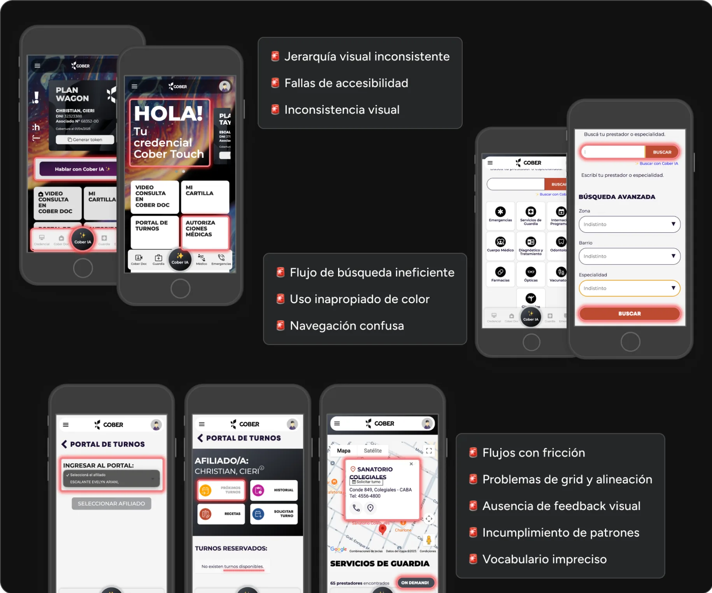
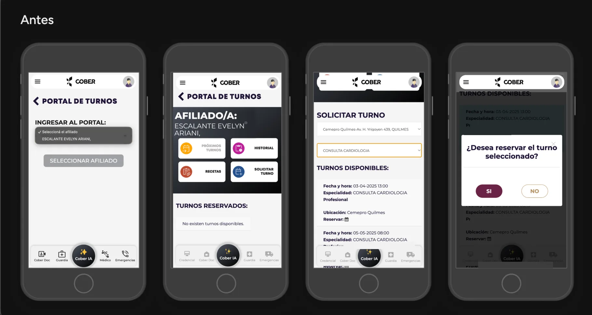
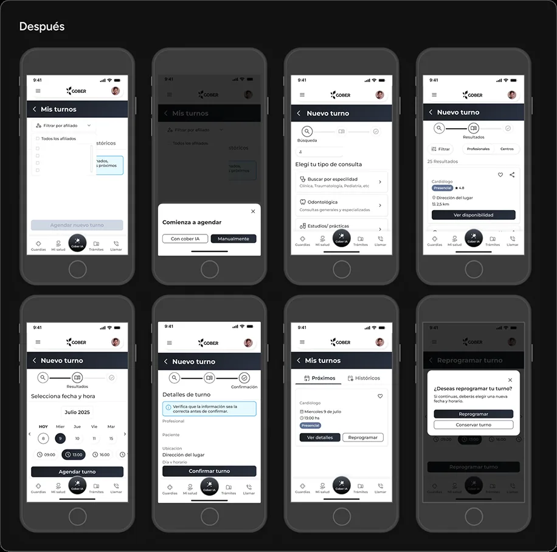
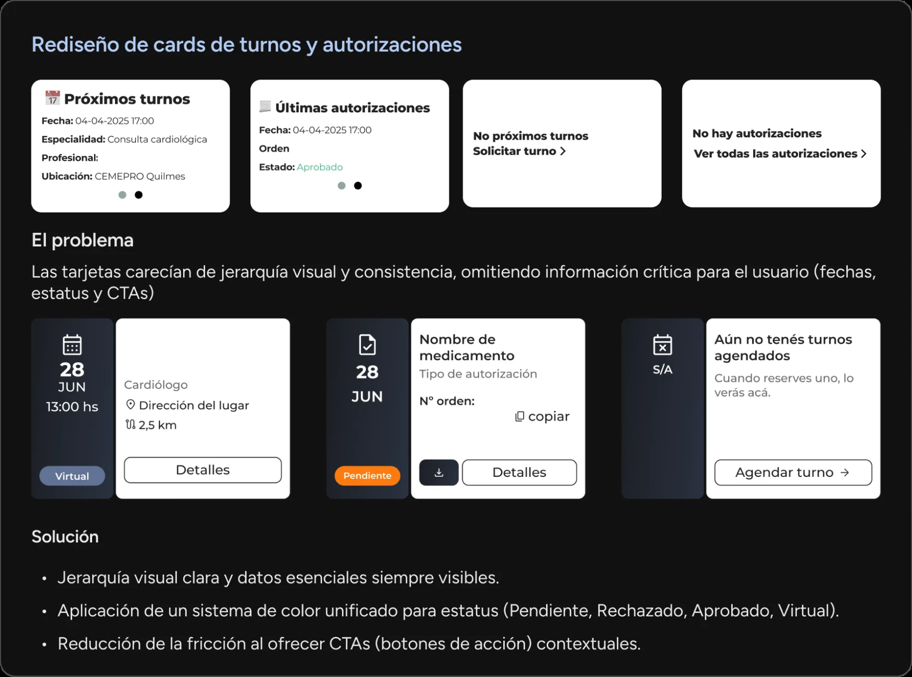
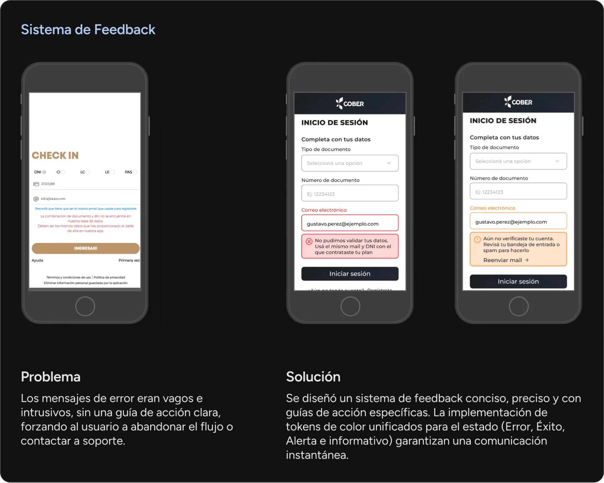
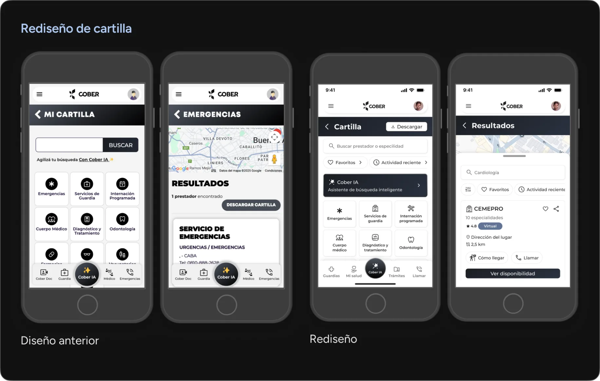

Cober Touch: la app de una obra social que estaba en estado
crítico. Diagnostiqué de raíz, investigué cómo los socios organizan sus
gestiones y rediseñé arquitectura, flujos y sistema de UI para convertirla
en una experiencia confiable.
La app de la obra social estaba en un estado crítico: inconsistente, poco
intuitiva y frustrante para sus socios. Fallaba en los flujos más sensibles
—sacar un turno, encontrar un prestador, consultar una autorización— justo
donde el usuario menos margen de error tolera.
Objetivo: convertir la app en una experiencia confiable y
eficiente sin rehacer el producto desde cero, trabajando sobre su arquitectura
y sus patrones para recuperar la confianza del usuario.
El disparador del proyecto no fue un dashboard sino el
volumen de reclamos de usabilidad que recibía el equipo de atención al cliente.
Auditoría heurística
Diagnostiqué el problema de raíz antes de proponer soluciones. Recorrí los
flujos principales para mapear los puntos de mayor fricción y agruparlos por tipo.
01
Jerarquía visual inconsistente
Problemas de grid y de alineación a lo largo de toda la app.
02
Uso inapropiado del color
Con fallas de accesibilidad asociadas.
03
Flujos con fricción
Búsqueda ineficiente y navegación confusa.
04
Ausencia de feedback visual
E incumplimiento de patrones ya conocidos por el usuario.
05
Vocabulario impreciso
Terminología interna que no conectaba con el lenguaje del usuario.

Auditoría heurística: cada hallazgo mapeado sobre la pantalla donde ocurre.
02
UX Research
Antes de proponer pantallas necesitaba entender cómo los socios organizan
mentalmente sus gestiones. Combiné la evaluación heurística con investigación
generativa.
Card sorting presencial
Hice un card sorting presencial, en dos fases. Con tarjetas físicas y
post-its, los participantes agruparon y nombraron las gestiones con sus
propias palabras. El formato presencial dejó ver no solo el agrupamiento
final sino las dudas y los "esto no sé dónde lo pondría", que una herramienta
remota se pierde.
Insight 01
Socio, no paciente
Dentro de la app, los usuarios no se piensan como "pacientes": se
piensan como socios de una obra social. El vocabulario clínico generaba
distancia; el lenguaje administrativo —mi credencial, mis autorizaciones,
mi cartilla— conectaba con su modelo mental.
Insight 02
Buscar por especialidad + zona
A la hora de buscar atención, el eje mental no es la sede sino la
necesidad: qué especialidad y en qué zona. Empezar la búsqueda por sede
obligaba a invertir ese orden y rompía la lógica del usuario.
Benchmark
Complementé el research con un benchmark de apps de salud y de obras
sociales para mapear patrones ya conocidos por el usuario —buscadores con
filtros, cartilla sobre mapa, estados de turno— y no reinventar convenciones
que ya funcionan.
Tablero real
El card sorting completo, en FigJam
Tarjetas, agrupamientos de las dos fases y las conclusiones del modelo
mental, públicos para revisar el proceso de punta a punta.
Con los insights del research, redefiní la arquitectura de información y el
flujo de reserva de turnos. Reorganicé las gestiones según el modelo mental del
socio —por tipo de gestión, no por área interna de la obra social.
El cambio de lógica en la reserva
El cambio de mayor impacto fue en el flujo de turnos. El flujo original
arrancaba por sede y recién después mostraba disponibilidad:
si la sede elegida no tenía turnos para esa especialidad, el usuario quedaba
en un callejón sin salida y tenía que volver atrás a adivinar. Invertí la
lógica a un filtro directo —especialidad y zona primero— que
devuelve solo resultados con disponibilidad real.
Antes · callejón sin salida
Elegir sede→Ver disponibilidad→Sin turnos↩Volver a empezar
El usuario decidía la sede sin saber si había
turnos: la decisión equivocada venía primero.
Después · filtro directo
Especialidad + zona→Resultados con turnos reales→Reservar
La disponibilidad guía la búsqueda: no hay
callejones sin salida.
Antes y después del flujo

Antes: el flujo de turnos original.

Después: el mismo flujo, con jerarquía y estados claros en cada paso.
04
Sistema de Diseño & UI
El rediseño se apoyó en claridad, consistencia y una estética sobria
alineada con patrones modernos. Trabajé el sistema en tres piezas y un criterio
transversal de accesibilidad.
Cards de turnos y autorizaciones
Las tarjetas no tenían jerarquía ni consistencia, y omitían información
crítica: fechas, estado y acción a seguir. Definí un sistema de color unificado
para los estados y dejé los datos esenciales siempre visibles, con la acción
principal a mano en cada tarjeta.

Sistema de feedback
Los mensajes de error eran vagos e intrusivos y no decían qué hacer después,
así que el usuario abandonaba el flujo o llamaba a soporte. Diseñé un sistema de
feedback conciso y con guía de acción explícita, apoyado en tokens de color por
estado: error, éxito, alerta e informativo.

Cartilla médica
Trasladé el Insight 02 al producto: la cartilla pasó de un listado plano a
un buscador con filtros por especialidad y zona, con resultados sobre mapa.

Cartilla: del listado anterior a un buscador con filtros y resultados sobre mapa.
Accesibilidad
Trabajé el sistema contra criterios WCAG 2.1/2.2 AA: contraste suficiente en
texto y estados, foco visible en navegación por teclado, estados que no dependen
solo del color (ícono y texto además del color) y targets táctiles cómodos.
Contraste AAFoco visible por tecladoEstado ≠ solo colorTargets táctilesJerarquía semántica
05
Validaciones & Testing
Para validar el rediseño del flujo de turnos preparé un guerrilla testing:
rápido, de bajo costo y en contexto. Dejo acá el protocolo que diseñé y las
hipótesis de mejora que guiaron la última iteración de las tarjetas.
Protocolo de guerrilla testing
Plan de validación
Participantes
4 usuarios con perfil de afiliado real.
Reclutamiento rápido en contexto (sala de espera / entorno cotidiano).
Tareas
Sacar un turno por especialidad y zona.
Encontrar un prestador en la cartilla.
Interpretar el estado de un turno.
Qué mido
Éxito de tarea y dudas o relecturas.
Puntos de abandono en el flujo.
Comprensión del estado de cada tarjeta.
Iteración de las tarjetas de turno
En base a la auditoría heurística y a las hipótesis del test, iteré las
tarjetas en dos puntos concretos:
Antes
La tarjeta mostraba fecha y estado, pero no decía explícitamente qué
tenía que hacer el usuario ni en qué paso del trámite estaba.
El estado dependía casi solo del color, sin refuerzo de texto.
Después · iteración
Microcopy explícito en cada estado ("Confirmá tu
asistencia", "Falta tu autorización"), con la acción principal a la vista.
Barra de avance progresivo que ubica al usuario dentro
del trámite: solicitado → confirmado → autorizado.
El protocolo queda listo para ejecutar; la iteración
responde a los hallazgos heurísticos y a las hipótesis de validación, no a
resultados de campo.
06
Impacto & Aprendizajes
La señal más clara no vino de un dashboard, sino del equipo de atención al cliente.
Después del rediseño dejaron de llegar los reclamos de usabilidad que
habían motivado el proyecto. Los problemas por los que la gente escribía ya
no estaban ahí.
Content Design en salud digital
En salud, las palabras cargan ansiedad. Un "error" sin salida o un estado
ambiguo no es solo fricción: es un usuario que no sabe si va a poder atenderse.
Gran parte del rediseño fue de content design —nombrar las gestiones como el
socio las piensa y convertir cada estado en una instrucción accionable.
Mi aprendizaje
Descubrí que la investigación con usuarios es lo que permite ir más allá de
lo estético. Observar en persona cómo la gente organiza la información me
permitió comprender sus frustraciones y diseñar una estructura que se sintiera
natural.